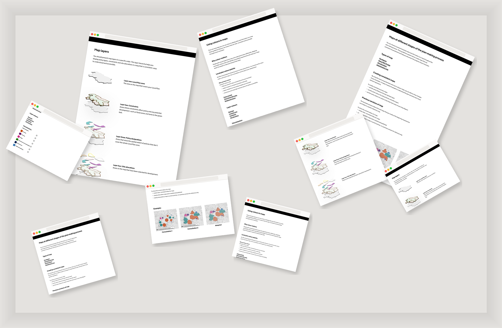

A discovery into how England's planning data could move from inaccessible PDFs to visual, interactive, web-based local plans — from whiteboard to GOV.UK guidance that is now live and in use across the country.
As Interaction Design Lead, I shaped six strands of research, led co-design sessions, designed and tested four prototypes, and produced recommendations that became official published guidance — now used by every Local Planning Authority in England.
England's local plans — the documents that determine where homes, businesses and infrastructure can be built — are typically presented as text-heavy PDFs. There is limited and inconsistent use of visual content such as maps, tables, charts and images. The 2020 Planning for the Future white paper and the Levelling Up and Regeneration Bill both signal a requirement for local plans to become digital, interactive and accessible. This discovery set out to understand what that shift would actually require.
Before a single screen was designed, the team spent time in rooms with planning officers, GIS professionals, and statutory consultees — mapping their world, sketching flows, and testing assumptions about what an interactive local plan would actually need to do.
Auditing 32 local plans made one thing very clear: there was no standard. LPAs were bound by the structure of their own council websites, leading to creative but inconsistent use of design components. Most used text-heavy PDFs with limited visual content. The result was a fragmented landscape that failed end users at almost every stage.
A key insight from research was that LPAs needed guidance before they needed a tool. These lo-fi designs — covering colour standards, map layer hierarchy, content types, and technical data guidance — were developed, iterated, and tested before moving to high-fidelity. They became the basis for the live GOV.UK guidance published in February 2025.

The colour key (left) defined 6 WCAG-validated policy theme colours — Housing (orange), Economy (purple), Design (pink/red), Environment & sustainability (green), Infrastructure (brown), Health & wellbeing (blue) — that are now the recommended standard for every LPA in England. The map layers guidance (right) established the standardised layer hierarchy that fed directly into the interactive map prototype.
Following ideation and research synthesis, four prototypes were built and taken to user testing with LPA users across England.
The interactive policy map prototype was designed across every state and user journey — from the default adopted view with all 6 policy theme layers, to postcode search showing policies affecting a specific area, to the historical Reg 18 consultation view with circular key diagram markers, to polygon drawing mode for site boundary searches.
The adopted map (main) shows all 6 policy theme layers using WCAG-validated colours on the OS greyscale base. The list view (top right, postcode SW16 1HS) returns "8 policies affect this area" with colour-coded policy cards including real policy codes (H1, H25, EC7, EN12). The Reg 18 view (bottom right) shows the circular key diagram format used at consultation stage — a deliberate design decision to signal to users that this is historical reference data.
A key user need identified in research was the ability to move seamlessly from seeing a policy on the map to reading its full text. The policy detail page design — shown here for H1 Housing Requirement — combines the structured policy data (period, requirements) with the full policy wording across clear sections: why the policy is needed, how it should be applied, and how outcomes will be measured.
Tested with planning officers, planning and GIS professionals, and a web content manager from Leeds City Council, Greater Cambridge Shared Planning, Norfolk County Council, Cheshire, and others — representing low, mid, and high digital maturity LPAs.
"The hardest design challenge here wasn't the interface — it was helping a diverse group of LPAs with completely different tools, teams and capabilities imagine the same future. I only recently found out the guidance went live — and that feeling of knowing your work shapes how planning decisions are made across the whole of England is something quite extraordinary."
This was the richest, most complex discovery I've led — holding desk research, market analysis, user needs, technical constraints, and national policy context simultaneously, while keeping the team focused on the questions that would actually move the programme forward. It also taught me something about the long tail of design work: the impact of a discovery often lands long after the project closes, in places you're not always watching.